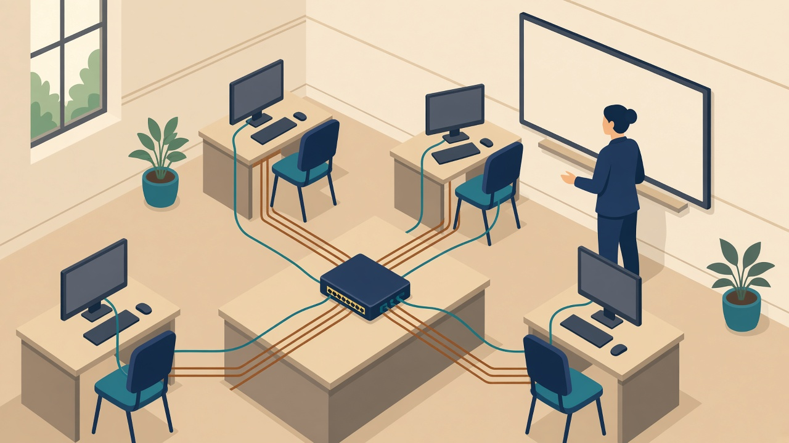
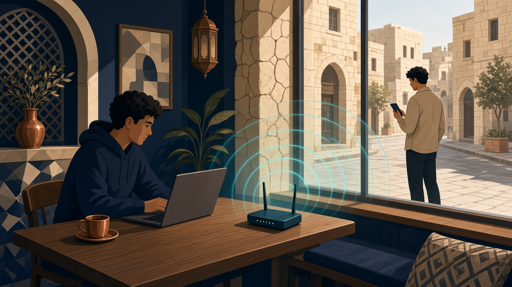
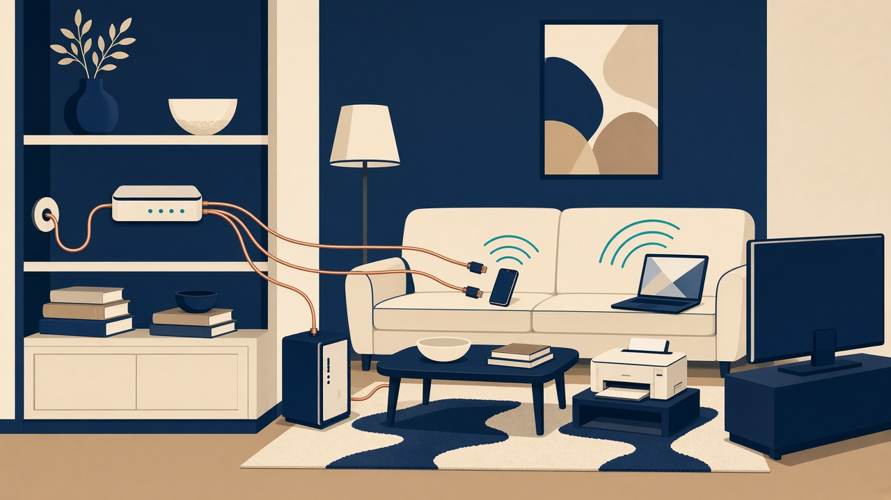
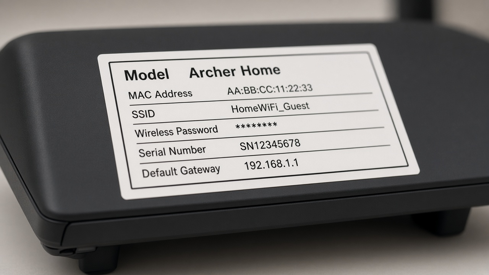
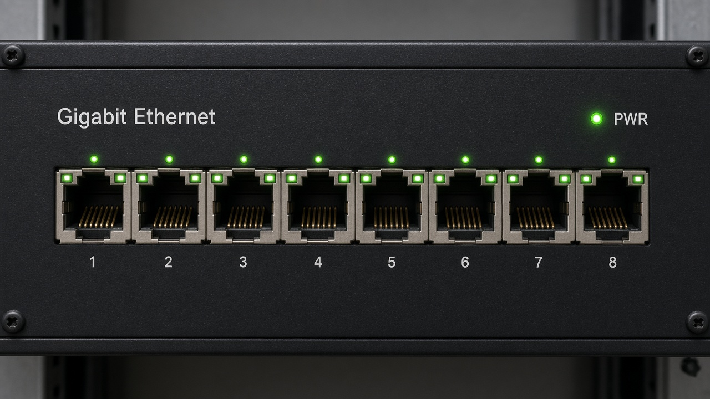
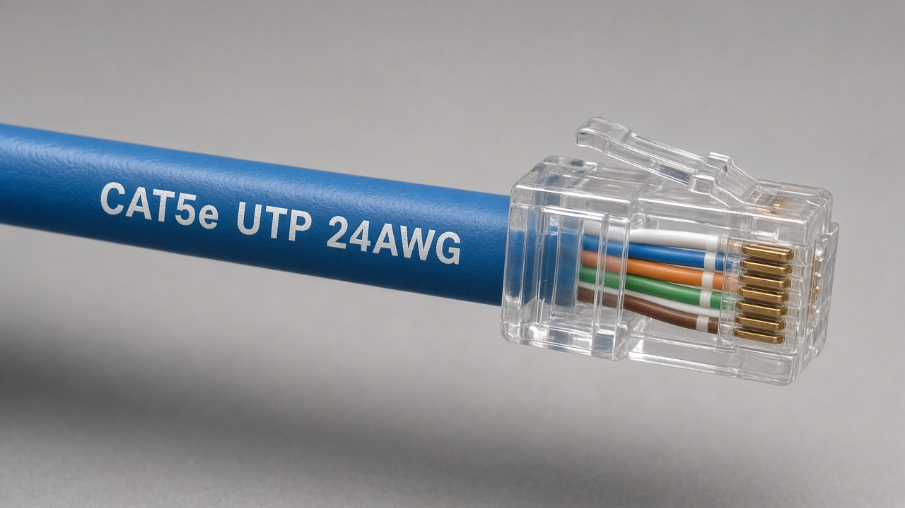
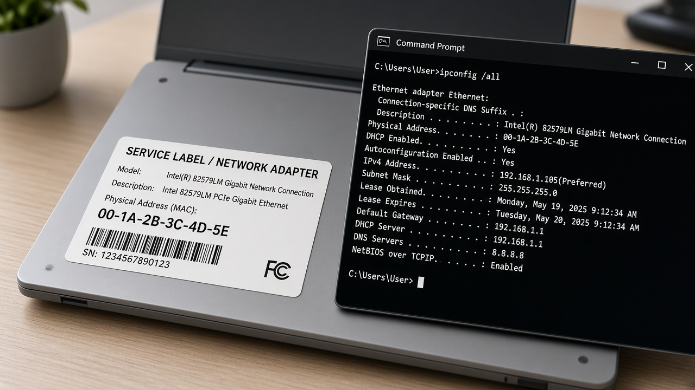
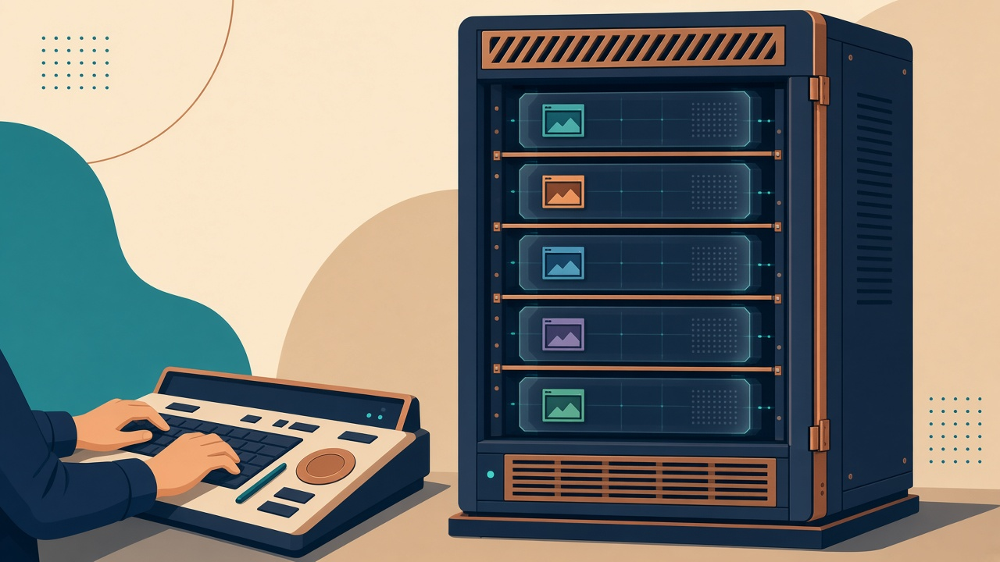
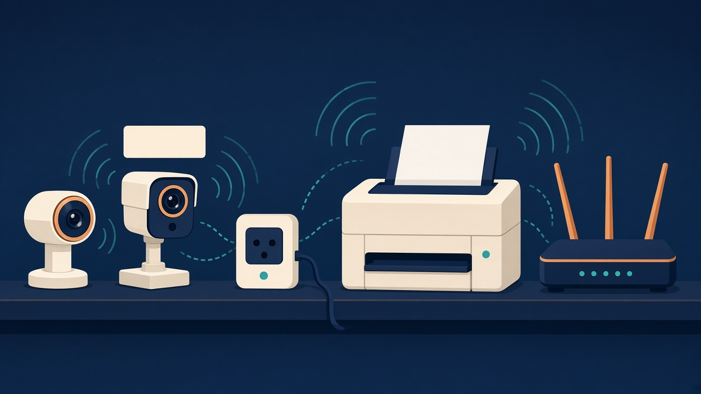

كلما اتسع النطاق وكثر من يصل إليه، زادت الطرق الخارجية. الشبكة المحلية المغلقة أهدأ من الإنترنت، لكنها لا تصبح آمنة لمجرد أنها داخل المبنى: موظف، ضيف، أو فلاشة تكفي.
المصطلحات من المواصفة، واضغط السماعة لنطقها:
محلية لاسلكية محلية واسعة تخزين شخصية
ب1 · Network types
الشبكة ليست «إنترنت أسرع». هي قرار عن المسافة، وعن الجمهور، وعن مكان البيانات. كل قرار يريح الناس ويفتح في الوقت نفسه بابًا يجب إغلاقه بطريقة تناسب ذلك النوع.
ب1 · النطاق الجغرافي
النطاق يشرح المكان. الأمان يشرح من يحق له أن يكون في ذلك المكان.
كلما اتسع النطاق وكثر من يصل إليه، زادت الطرق الخارجية. الشبكة المحلية المغلقة أهدأ من الإنترنت، لكنها لا تصبح آمنة لمجرد أنها داخل المبنى: موظف، ضيف، أو فلاشة تكفي.
المصطلحات من المواصفة، واضغط السماعة لنطقها:
محلية لاسلكية محلية واسعة تخزين شخصية
ب1 · LAN

تمتد عادة داخل مبنى أو مجموعة مبانٍ متجاورة، وتملكها مؤسسة واحدة. التوصيل الشائع نحاس أو ألياف. سرعتها عالية لأن المسافة قصيرة.
في مختبر من عشرين جهازًا موصولة بـ Switch واحد، انقطع كهرباء ذلك الجهاز. الأجهزة سليمة والإنترنت في المبنى سليم، لكن الطلاب توقفوا لأن الطريق الوحيد يمر من نقطة واحدة. هذا أثر تشغيلي، لا يحتاج مخترقًا.
سرعة، مشاركة موارد، رقابة لأن الأجهزة داخل سورها.
الوثوق الزائد. من دخل المبنى أو وصل جهازًا بالمنفذ أصبح «داخل» الشبكة. العزل بين الطلاب والإدارة أهم من شكل الكيبل.
ب1 · WAN
النطاق الجغرافي كبير، والربط غالبًا عبر مسارات سلكية تملكها شركات اتصال. الإنترنت شبكة واسعة مفتوحة للجمهور، ولذلك هو المصدر الأوسع للتهديدات القادمة من الخارج.
بنك له فرع في عمّان وآخر في إربد يحتاج مسارًا واسعًا حتى يصل الموظف إلى النظام نفسه. المسار يخرج من المبنى، فيصبح حمايته جزءًا من العقد مع مزود الخدمة.
أي شخص يستطيع أن يحاول الوصول إلى خدمة منشورة. النشر قرار. كل منفذ مفتوح على الإنترنت سطح ظاهر للعالم.
عام 2017 توقفت عمليات الشحن في شركة ميرسك أيامًا بعد أن انتشر خلل عبر أنظمتها المتصلة، وخسائرها المعلنة قاربت 300 مليون دولار. الدرس: الشبكة الواسعة تحمل العمل نفسه، لا الرسائل فقط.
ب1 · WLAN

تعتمد على واي فاي. نجدها في البيوت والمؤسسات، وأيضًا في المقاهي والمطارات والمحلات. ميزتها الحركة. ثمنها أن الموجة تُبث، فيقدر من في المدى أن يحاول التقاطها إن كانت بلا حماية مناسبة.
طالبة فتحت شبكة المقهى المفتوحة ودخلت بريد الكلية. الجالس على الطاولة المجاورة ضمن مدى البث. إن كان الموقع بلا تشفير كافٍ، فمحتوى الجلسة أقرب إلى حديث بصوت مسموع. الشبكة العامة مكان سيئ لكلمة المرور.
تشفير حديث للواي فاي في المؤسسة، شبكة ضيوف مفصولة، وعدم اعتماد إخفاء اسم الشبكة وحده. في المقهى: بيانات حساسة عبر اتصال الهاتف أو قناة مشفرة، لا عبر شبكة مفتوحة.
ب1 · SAN
شبكة منطقة التخزين عالية السرعة، توصل الخوادم بأجهزة التخزين عبر ألياف أو إيثرنت سريع. لا تختلط عادة بحركة الشبكة المحلية العادية. تحتاجها المؤسسات التي تخزن كميات ضخمة وتريد أن تصل عدة خوادم إلى الأقراص نفسها.
إن فُتح مسار التخزين لكل الشبكة المحلية، أصبحت صور المرضى وملفات العقود على الطريق نفسه الذي يسلكه أي جهاز مصاب. فصل SAN يقلل من يصل، ولا يلغي الحاجة إلى صلاحيات ونسخ احتياطي. تعطله يوقف العيادات حتى لو بقيت أجهزة الاستقبال تعمل.
ب1 · PAN
تربط أجهزة مساحة العمل القريبة: هاتفًا بسماعة، ولوحة مفاتيح، وفأرة. المعيار الشائع بلوتوث: مدى قصير وطاقة قليلة.
سماعة في الحافلة، ساعة مع الهاتف، فأرة المدرّس. لا كيبل، والاقتران يتم بين طرفين متقاربين.
الجهاز الذي يبقى قابلًا للاكتشاف في مكان عام قد يُقرن بطرف لم يقصده صاحبه. المدى قصير فيصعب الهجوم من الشارع البعيد، والقرب الجسدي هو الشرط.
إغلاق الاكتشاف بعد الاقتران، وعدم قبول طلب اقتران مفاجئ في محطة الباص. الشبكة الشخصية آمنة حين تبقى شخصية.
ب1 · مقارنة
| النوع | النطاق ومن يستخدمه | الوسط الغالب | أثر الاختيار |
|---|---|---|---|
| PAN | مترات حول شخص | بلوتوث | مريح وخاص. الاكتشاف المفتوح في الزحام هو الخطأ. |
| LAN | مبنى مؤسسة واحدة | نحاس أو ألياف | سريعة وقابلة للإدارة. الخطر من الداخل ومن المنفذ إلى الإنترنت. |
| WLAN | المبنى نفسه بلا كيبل | موجة راديو | حركة حرة. البث يعبر الجدار، فتُفصل شبكة الضيوف. |
| SAN | خوادم وتخزين المؤسسة | ألياف أو إيثرنت سريع | أداء للبيانات الضخمة. يجب ألا تصبح ممرًا عامًا. |
| WAN | مدن ودول، وأشهرها الإنترنت | مسارات مزودي الخدمة | تربط العمل. وهي الباب الأوسع من الخارج. |
ب1 · من يحق له الدخول
شبكة خاصة داخل المؤسسة تستخدم تقنيات الإنترنت. الموظف يفتح المتصفح ويرى التعاميم ونظام الإجازات. الجمهور لا يراها.
جزء من الإنترانت يُفتح لشركاء محددين: مورد، عميل، شركة تدريب. الشريك يرى بعض الأنظمة فقط. الخطأ الشائع أن ينفتح له الممر المؤدي إلى الباقي.
أي شبكة عامة يستطيع الناس الوصول إليها. النشر عليها قرار واعٍ: موقع الكلية عام، وعلامات الطالب ليست كذلك.
خدمة كانت داخل المكتب وانتقلت إلى أنظمة على الإنترنت. أشهر صورها تخزين الملفات عند مزود بدل خادم الملفات في الغرفة. الملف غادر المبنى، والمفتاح صار الحساب.
ب1 · لعبة تفكير
خمس حالات. السؤال قصير. الإجابة تحتاج تفكيرًا: ما الذي يبقى يعمل؟ وما الذي يسقط؟ ناقشوا أولًا، ثم اكشفوا ما نثبته بعد الحوار.
تعرفون مسبقًا: Server · Switch · Access Point · Modem · Router
الحواسيب شغّالة، وكهرباء المبنى سليمة، وخط الإنترنت للمبنى يعمل. ماذا يتوقف على الطالبات في هذا المختبر؟ وماذا لا يتأثر؟
يتوقف كل ما يمر عبر ذلك الـ Switch: مشاركة الملفات والطابعة بين أجهزة المختبر، والوصول إلى Server الكلية إن كان طريقه من هذا الجهاز، والإنترنت من الحواسيب السلكية في المختبر. لا يتأثر مبنى آخر مربوط بمسار مختلف، ولا جهاز على شبكة أخرى.
Switch المختبر يعمل، والحواسيب تتبادل ملفات فيما بينها. ماذا يتوقف؟ وماذا يبقى؟
يتوقف الخروج إلى الإنترنت: المواقع، البريد السحابي، التحديث من الخارج. يبقى ما هو محلي بالكامل: مشاركة مجلد بين جهازين على نفس الـ Switch، وطابعة الشبكة المحلية إن لم تحتج الإنترنت.
الكيبل إلى الحواسيب الثابتة سليم. ماذا يتوقف؟ ومن يستمر؟
يتوقف الواي فاي: الهواتف والحواسيب المحمولة على الموجة. يستمر من هو مربوط بسلك إلى الـ Switch. الدرس: العطل لا يعني «انقطاع الشبكة كلها»، بل انقطاع المسار الذي يعتمد على ذلك الجهاز.
الإنترنت العام يفتح في المتصفح. ماذا يتوقف في يوم الكلية؟ وماذا قد يبقى؟
يتوقف الدخول بالحساب الموحد، ومجلدات الطلاب المشتركة، وكثير من الطباعة المركزية. قد يبقى تصفح الإنترنت العام، ومشاركة ملف مباشرة بين جهازين بلا المرور على الـ Server. السؤال العميق: هل «الشبكة شغّالة» تعني أن العمل الدراسي شغّال؟
داخل المختبر الأجهزة على Switch واحد. الإدارة على شبكة أخرى. ماذا ينقطع بين الطرفين؟ وماذا يبقى داخل المختبر؟
ينقطع العبور بين الشبكتين، وغالبًا الإنترنت إن كان طريقه عبر ذلك الـ Router. داخل المختبر قد تبقى الأجهزة تتحدث فيما بينها عبر الـ Switch. الدرس: الـ Router حدّ بين عوالم؛ سقوطه لا يطفئ بالضرورة كل كيبل في الغرفة.
ب1 · الدمج

الجهاز المنزلي متعدد الوظائف: خط هاتف أو تلفاز، ثم منافذ سلكية، ثم بث لاسلكي.
المكتب الثابت يأخذ كيبلًا. الحاسوب المحمول والهاتف يأخذان الموجة. الدمج قرار تصميم: السلك أثبت وأصعب اعتراضًا، والموجة تمنح الحركة وتحتاج عزلًا وتشفيرًا.
ميّز منفذ المزود عن منافذ الأجهزة. أشر إلى الهوائيات. قل: هذا الصندوق الصغير يجمع Modem و Router و Switch و Access Point، وسنفصله في ب2.
ب1 · مخططات مادية
المخطط المادي يصف كيف تتصل الأكبال بالأجهزة. النجمي يصل كل جهاز بـ Switch في الوسط. النجمي الموسّع يكرر الفكرة بوحدات Switch إضافية حين لا تكفي المنافذ.
الشكل 11.5 بصورة التدريس: سهل التتبع. سقوط الـ Switch يوقف الجميع.
الشكل 11.6: كل جناح له Switch، والوسط يجمعهم. العطل يضيق بدل أن يعمّ المبنى.
ب1 · هرمي ومتشابك ومخصص
ثلاث طبقات معروفة بالإنجليزية: Access عند الأجهزة، ثم Distribution تربط الأجنحة، ثم Core في الوسط — العمود الفقري الذي يصل أجزاء المبنى الكبيرة ببعضها عبر Router أو Switch قوي.
Core = العمود الفقري. إن توقف، تتأثر أجزاء كبيرة من الشبكة دفعة واحدة.
عقد تغطي مستودعًا أو طابقًا أوسع من نقطة واحدة. عقدة واحدة فقط تحتاج كيبل إنترنت، وتشارك البقية الاتصال مع جارتها. سقوط عقدة لا يطفئ الساحة كلها إن بقي مسار بديل.
مزيج سلك للأجهزة المكتبية وموجة لهواتف الموظفين وأجهزتهم. حين يدخل الجهاز الشخصي شبكة المؤسسة نسميه إحضار الجهاز الشخصي. الجهاز ليس تحت سياسة الكلية بالكامل.
ب1 · مخططات منطقية
المخطط المادي = شكل الكيبل. المخطط المنطقي = قواعد الكلام على الشبكة. أشهر عائلتين: سلكي اسمه Ethernet، ولاسلكي اسمه عائلة Wi-Fi.
| الرمز | بالإنجليزية كاملًا | معناه ببساطة |
|---|---|---|
| Institute of Electrical and Electronics Engineers | منظمة تضع معايير الشبكات والكهرباء. أرقام مثل 802.3 و802.11 صادرة عنها. | |
| / | IEEE 802.3 | معيار الشبكات السلكية. هو ما يشتغل عليه كيبل المختبر والـ Switch. |
| Unshielded Twisted Pair | كيبل نحاس شائع: أزواج أسلاك ملفوفة، بلا غلاف معدني ثقيل. «غير معزول» هنا تعني بلا درع معدني، لا تعني «غير آمن». | |
| Registered Jack 45 | الفيشة البلاستيكية في طرف كيبل الشبكة (أكبر من فيشة الهاتف قليلاً). | |
| Media Access Control address | عنوان ثابت مطبوع على بطاقة الشبكة. الـ Switch داخليًا يقرر المنفذ بحسبه. | |
| Internet Protocol address | عنوان منطقي للجهاز على الشبكة (مثل 192.168.1.10). الـ Router يقرر الطريق بين الشبكات بحسبه. | |
| / | IEEE 802.11 | عائلة معايير الشبكات اللاسلكية. Wi-Fi هو الاسم التجاري الشائع لها. |
| Mbps / Gbps | Megabits / Gigabits per second | وحدة السرعة: ميغابت أو غيغابت في الثانية. الكتاب يذكر حتى 400 Gbps في أنواع كيبل عليا. |
ب1 · اقرئي الملصق
قبل ما نفتح الإعدادات، اقلبي الصندوق. المصنع يطبع على الملصق ما تحتاجه المعلمة والطالبة لأول تشغيل… وما يجب تغييره فورًا في الكلية.

| المكتوب | معناه | لماذا وُضع هنا؟ |
|---|---|---|
| Model | طراز الجهاز | حتى نعرف دليل الاستخدام ونوع المنافذ والسرعة المدعومة. |
| MAC Address | عنوان بطاقة الشبكة الفيزيائي | يميّز الجهاز على الشبكة. يُطلب أحيانًا عند تسجيل الجهاز عند المزود أو في سجلات الكلية. |
| SSID | اسم شبكة الواي فاي الافتراضي | لتجد الطالبة الشبكة لأول مرة. في المؤسسة يُغيَّر إلى اسم واضح للضيوف/الطلاب حسب السياسة. |
| Wireless Password | كلمة مرور الواي فاي الافتراضية | تسهّل التشغيل المنزلي. على ظهر الصندوق = أي زائر يقرأها. لذلك تُغيَّر فور التركيب في الكلية. |
| Serial Number | الرقم التسلسلي | للجرد والضمان وتتبع الجهاز المسروق أو المستبدل. |
| Default Gateway مثل 192.168.1.1 | عنوان الـ Router من جهة الشبكة المحلية | هذا عنوان صفحة الإعدادات غالبًا، وهو نفسه «البوابة» التي تظهر في ipconfig. |
الملصق يساعد التشخيص، وهو أيضًا ورقة مفتوحة. كلمة الإدارة الافتراضية المطبوعة على العلبة من أشهر أخطاء البيوت والمؤسسات الصغيرة.
ب1 · اقرئي الجهاز والكيبل


ب1 · نشاط ويندوز أمام الصف
نشاط قصير على ويندوز. أنتِ تشغّلينه على جهاز المعلمة أو جهاز مختبر ظاهر على الشاشة. الطالبات يشاهدن ثم يكررن إن سُمح لهن.

MAC بطاقة الجهاز. IP عنوانه اليوم على هذه الشبكة. البوابة باب الخروج نحو الشبكات الأخرى والإنترنت — وغالبًا هي الـ Router.
ب1 · بنية الشبكة
بلا Server مركزي. كل مستخدم يدخل إلى جهازه ويشارك مجلدًا أو طابعة. تناسب بيتًا أو مكتبًا صغيرًا. سهلة ورخيصة. حين يكبر العدد تصبح الإدارة كابوسًا: التحديث وكلمة المرور على كل جهاز وحدهما، والدخول ممكن فقط حيث يوجد حساب.
حساب واحد على الشبكة، فيدخل صاحبه من أي جهاز مسموح. التحديث والصلاحيات والنسخ تُدار من الـ Server. هذا ما تحتاجه كلية. مركز القوة يعني أيضًا أن سقوط الـ Server أو سرقة حساب المدير أثره واسع، فيُحمى ويُنسخ.
جهاز بمواصفات أقل يشغّل تطبيقات الويب ويخزن في السحابة. أرخص. مثاله أجهزة Chromebook. سرقته تؤذي أقل إن لم يُحفظ عليها شيء. تعطله الحقيقي هو انقطاع الشبكة أو سرقة الحساب السحابي.
بيت من أربعة أشخاص: نظير إلى نظير كافٍ. كلية من ألف طالب: عميل و Server. صف يعتمد دفترًا سحابيًا: العميل الرقيق منطقي، بشرط أن تبقى الهوية والنسخ تحت الإدارة.
ب1 · اتجاهات حديثة

Server قوي يشغّل عدة حواسيب افتراضية، لكل منها نظام وتطبيق. نوفر أجهزة ونوسّع أسهل ونعزل المهام: ويب في آلة، وقاعدة بيانات في أخرى. الخطر: إن انكسرت العزلة أو وقعت منصة الاستضافة، تشارك الجميع المصير. النسخ والحماية تكون لكل آلة لا للصندوق فقط.
برمجيات كخدمة مثل مستندات تعمل في المتصفح على Server المزود. منصة كخدمة تعطي المطوّر أدواتًا وقواعد وبيئة جاهزة. الأثر المتوازن: سرعة وتحديث عند المزود، وفقدان السيطرة المباشرة. بيانات المؤسسة أصبحت عند طرف آخر، فيلزم عقد واضح وصلاحيات ومكان تخزين مفهوم للإدارة.
بدل ضبط كل جهاز بيدوي، تُدار الشبكة من طبقة تحكم برمجية، بمرونة تشبه السحابة داخل المؤسسة. مفيدة للتغيير السريع. وحدة التحكم هدف ثمين: من يغيرها يغيّر سلوك الشبكة كلها، فتُحصر صلاحية التعديل وتُسجَّل.
أجهزة التخزين تُوصل بالشبكة لتكون متاحة لمن يحتاج الكميات الكبيرة، لا حبيسة Server واحد. قريبة في الفكرة من SAN. الفائدة وصول أسهل للبيانات الضخمة. الشرط أن «متاحة على الشبكة» لا تعني متاحة لكل حساب.
الهاتف الشخصي يريح الموظف ويوفّر جهازًا، ويصعب على الكلية أن تفرض عليه التحديث وقفل الشاشة وفصل البريد عن التطبيقات الخاصة. جهاز مفقود فيه بريد العمل يعني رسائل الكلية في يد من وجد الهاتف. الحل المتوازن: شبكة منفصلة أو إدارة محدودة للجهاز، لا منع أعمى ولا ثقة عمياء.
ب1 · IoT

إنترنت الأشياء وصل أجهزة تُشغَّل وتُطفأ بالشبكة: كاميرا، ساعة، حسّاس باب، سبورة، طابعة. كل جهاز حساب، وكلمة مرور، وتحديث، وغالبًا بلا شاشة تنبّه أحدًا.
أجهزة منزلية ومتاجر، كثير منها بكلمات مرور افتراضية، استُخدمت بأعداد هائلة للضغط على شركة Dyn التي تقدم خدمة أسماء نطاقات. مواقع كبرى صارت لا تُفتح في أجزاء من الولايات المتحدة لأن الاسم لم يعد يتحول إلى عنوان. الأجهزة الصغيرة أسقطت خدمة يعتمد عليها الكبار.
الأثر هنا تشغيلي وعالمي: التوفر، لا سرقة ملف واحد.
ب1 · مهارة المواصفة
المطلوب أن يفسّر الطالب الرسم ويعدّله ببرنامج رسم. ابدأ بالنجمة، ثم أضف Server ورابط الإنترنت والواي فاي كما يطلب نشاط الكتاب.
المختبر مربوط نجميًا فقط. أضف الجزء الذي يريد الكتاب ظهوره في مخطط الكلية.
ينقل الطلاب الرسم إلى diagrams.net أو أشكال وورد: Switch، Server، Router، سحابة إنترنت، Access Point، وشبكة ضيوف مفصولة. التفصيل في صفحة العملي.